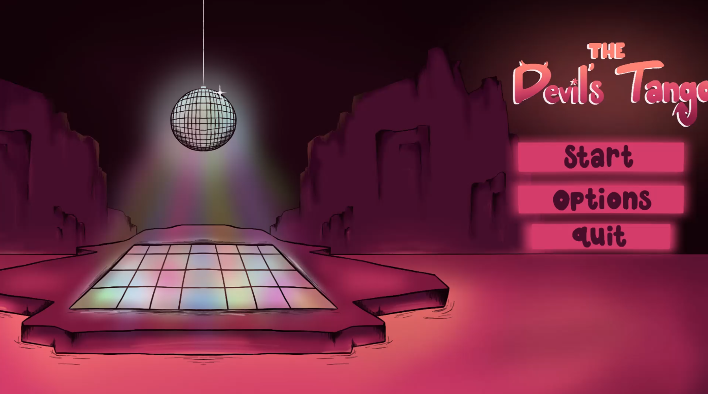
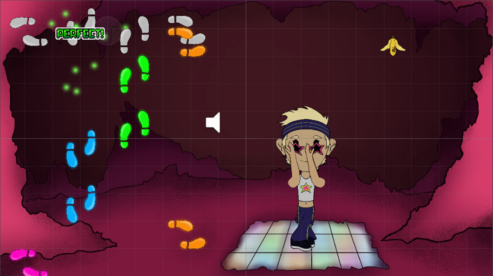
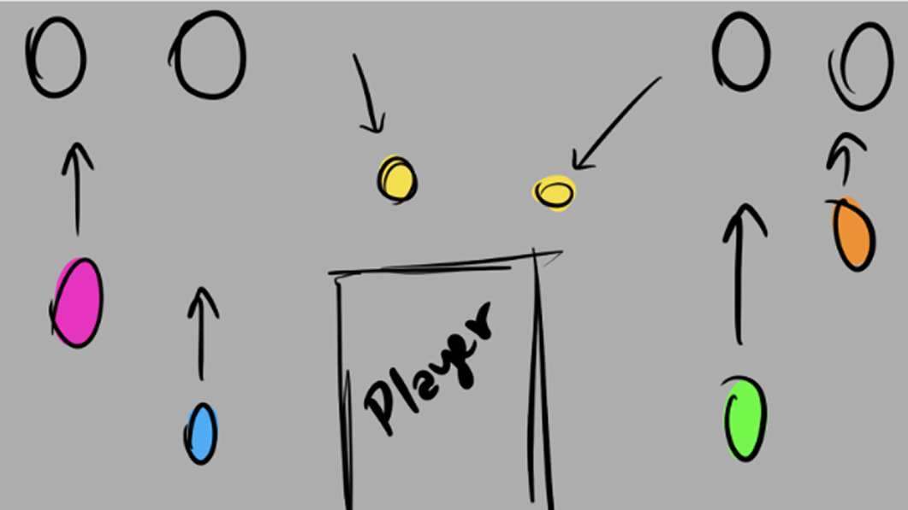
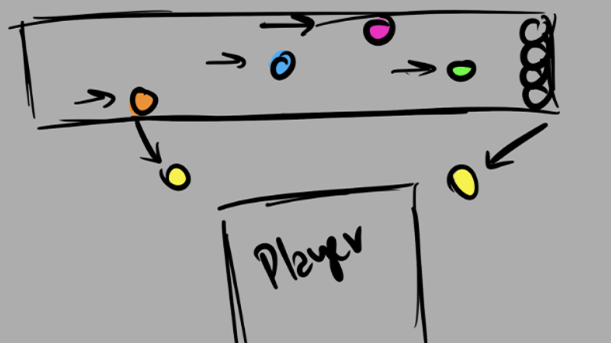
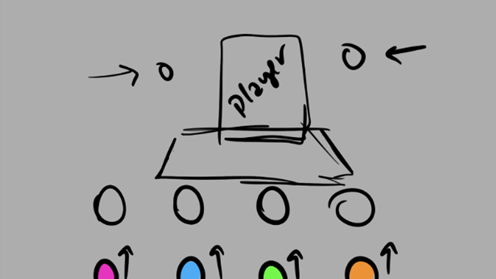

Dance your way out of Hell.

The Devil's Tango is a rhythm based visual novel game. Orion was once a famous dancer and choreographer until he tragically slipped on a banana peel and died. Now in Hell he meets Satan, a disgruntled past fan. In order to escape, Orion must prove that he still has the love of dance in his heart!
My Contributions
UX Designer: Approached and worked through layout challenges within this game's specifications through multiple iterations and user tests.
UI Designer: Created UI mockup sketches to test layouts before later fully rendering the final elements.
UI Programmer: Created base level UI systems, including: dialogue, menus, and rhythm game layout.
Project Details
Platform: Desktop (Itch.io)
Team Size: 4
Project Length: 4 months, January 2024 - April 2024
Tools: Unity, Trello, Procreate, Photoshop

Click here to watch a full playthough!
Focusing On Multiple Elements at Once - A Case Study
Once our team finished our first playtest we realized we desperately needed to perform a major design overhaul. Users were almost unable to play our game because we were their attention and forcing them to choose only one mechanic to pay attention to. This was incredibly frustrating for players.

Initial Layout - Split Attention
Since we needed a completely new layout, I got to work mocking up a few options, creating pros and cons lists, and testing with users to get initial feedback. So that we could move forward with implementation as soon as possible.

Mockup 1 - Screen split by player
The first option I came up with, places the player at the center of the screen, allowing the player to see the bananas in their peripheral. rhythm section is split by the player and bananas which keeps the majority of the player's attention to the top 1/3 of the screen. However, since we're splitting a mechanic this could cause issues with players knowing what buttons to press or just making the experience feel more disjointed than it has to.

Mockup 2 - Rhythm at the top
The second option I tried out put the rhythm mechanic along the top of the screen, where the bananas will initially spawn in. This allows the player more time to plan for the bananas while focusing on the more strenuous rhythm mechanic. However, it also makes the rhythm mechanic feel completely separate from the player character. And since this action corresponds to the player's movement we didn't love that.

Mockup 3 - Rhythm at the bottom w/ player above
This is the final iteration I came up with, and the one we ended up moving forward with. It places the rhythm mechanic at the players feet, completely centering view on the player character. This allows players to see the bananas in their peripheral and understand the connection between the rhythm notes and the character's movements.

Final Layout - Clear connection between notes and player character
Retrospective
While I'm really happy with how this project turned out, I do wish I knew more about research techniques and heuristics. I think these would have helped me a lot as I conducted this case study so I could have tested more thoroughly with users and better understood the results.